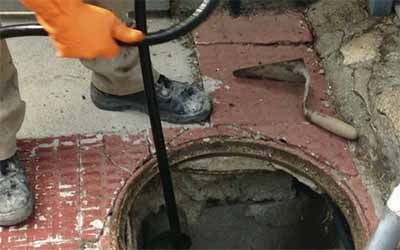
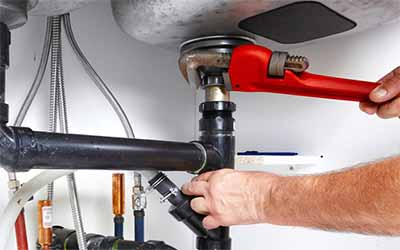
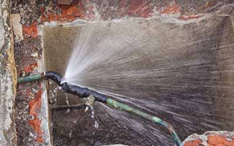
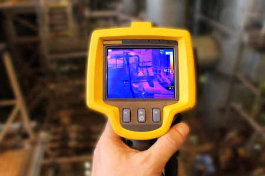
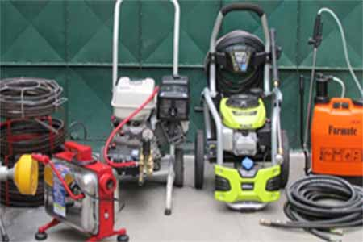

Destapes
Alcantarillados, cañerías, sanitarios y ductos verticales con camiones hidrojet, varilla, máquinas eléctricas y cámaras.
Destapes con cámara e hidrojet, detección de fugas de agua y gas, e instalaciones. Atendemos a domicilio en todo Santiago.
Servicio de emergencia 24/7
Alcantarillados, cañerías, sanitarios y ductos verticales con camiones hidrojet, varilla, máquinas eléctricas y cámaras.

Reparación e instalación de calefont, termos, cocinas y hornos a gas, bombas sumergibles y artefactos sanitarios.

Detección de fugas de agua y gas con gas trazador, ultrasonido, cámara termográfica y video inspección.

Inspección de tuberías, shaft de edificios y alcantarillado, con registro en video.
Arturo Valenzuela & Cía. Ltda. es una empresa de gasfitería con más de 40 años en el rubro, ubicada en Francisco Bilbao 2946. Su dueño es técnico electromecánico de la Escuela Industrial, con estudios de electrónica en la Universidad de Chile.
Trabajan con autorización de Aguas Andinas y SEC, y atienden departamentos, condominios, empresas y edificios.

Lo Barnechea, Vitacura, Las Condes, Providencia, La Reina, Ñuñoa
Peñalolén, Macul, La Florida, Puente Alto
Cerrillos, La Cisterna, Lo Espejo, Maipú
Santiago Centro, Quinta Normal, Estación Central, San Miguel
Huechuraba, Quilicura, Conchalí, Recoleta, Independencia
Lo Prado, Cerro Navia, Pudahuel
Casa matriz: Francisco Bilbao 2946, Providencia. Tel. 22 225 7458.
Sucursal: Apoquindo 6274. Tel. 22 339 0449.
Lunes a sábado, de 08:00 a 21:00. Emergencias 24/7.